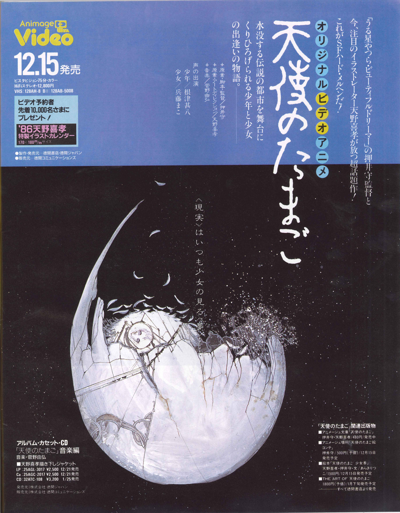
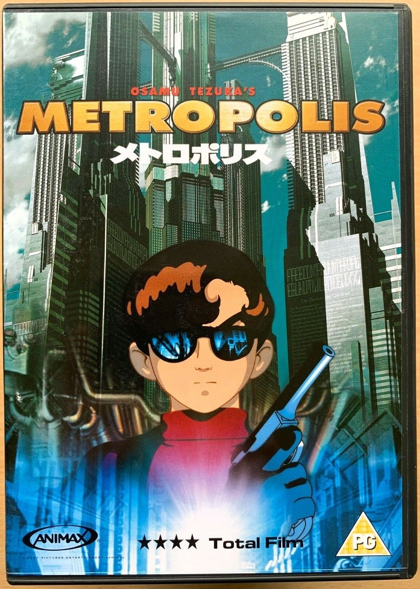
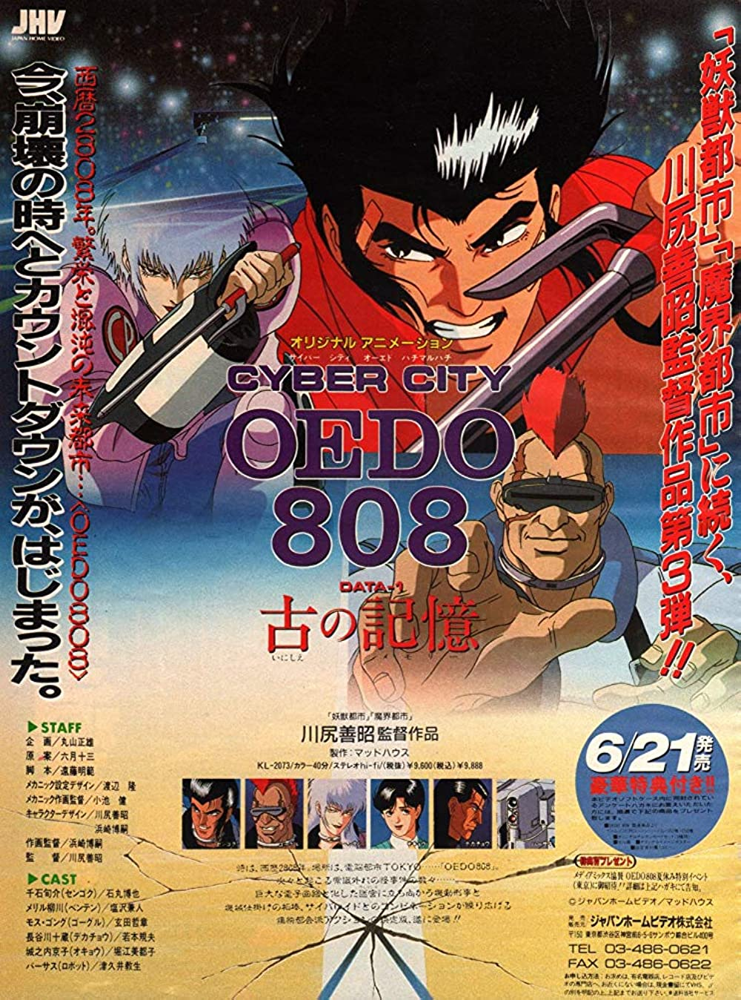
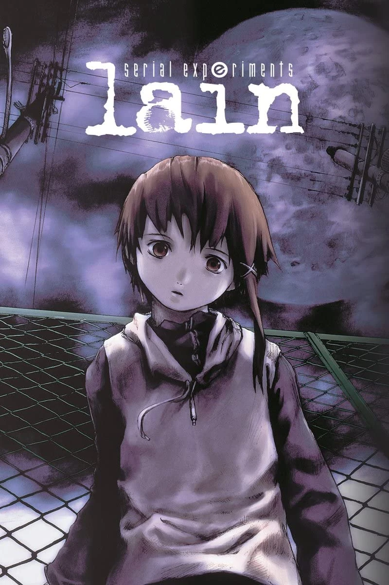
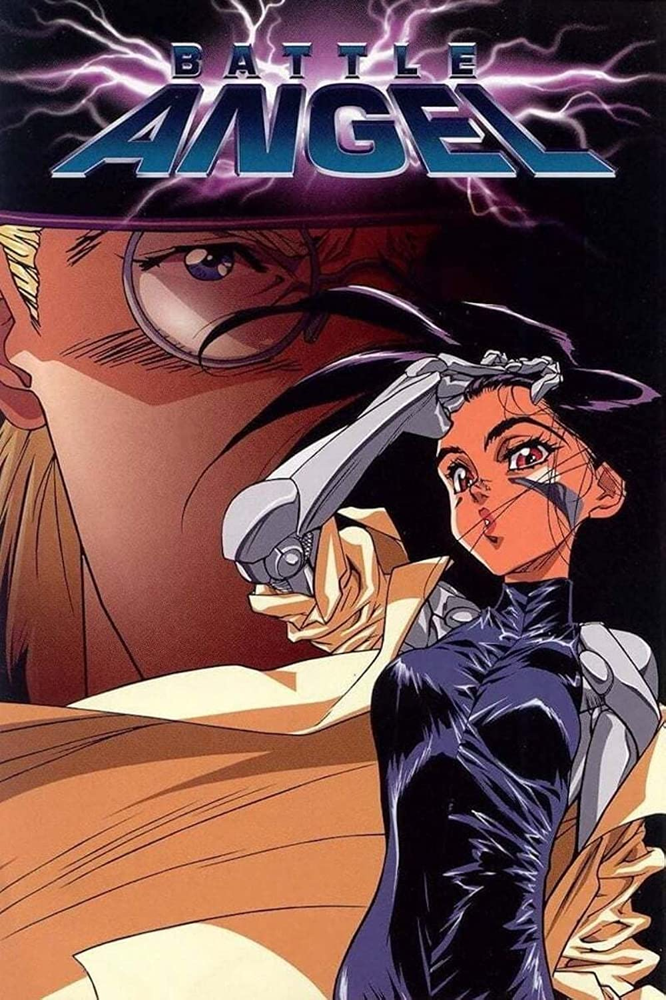

For the hard-earned title of “The Best”, Akira comes out at the top after a painfully long consideration. Sure, anyone could make a case that any others could deserve to be here. But I’m certain that none of them are as much of a stark representation of what the word ‘cyberpunk’ really is. Akira is, after all, the very first manga series dedicated solely to the cyberpunk genre. On the other hand, its anime series also further popularized the genre for the years to come. To this day, even. All in all, the godfather of all cyberpunk anime is absolutely worth a watch – and for good reason.
From Mamoru Oshii of “Ghost in the Shell” fame, we receive this deceptively simple story: A young girl wanders through a dark, empty city inhabited only by the ghosts of the past, both human and animal. She carries with her a massive egg, which she protects and nurtures. Soon a man appears and begins to follow her. Much of the movie is without dialogue. That doesn't sound terribly inviting, but it is what it is: An ominous and slow-moving film that, while requiring a degree of patience, is nonetheless quite lovable.
Metropolis is…a silent film from 1927 by the German director Fritz Lang. It’s set in a dystopian future where some naive teenager tries to overcome the class system to pursue love. Metropolis is…a manga written in 1949 by Osamu Tezuka. Its similarities to the original film are pretty limited, mainly because Tezuka hadn’t even seen the film when he wrote the manga. He’d only seen a single picture in a magazine and thought it looked pretty rad.
Let’s dive into the realm of dreams with Paprika. It’s a surreal and thought-provoking anime film that both satisfies and entertains, all while making you pick your brain at times. The story introduces the concept of how technology affects us, and essentially changes our perception of dreams and reality. It’s all wrapped in a neat yet adult-oriented package that, once again, I could only recommend for older audiences. What makes this anime stand out is the chilling ambiguity of its imagery and storytelling – so much so that it’s hard to actually put it into words. It’s much like Inception, for example. Years later and there are still wars waged online as to what the spinning top at the end of that movie meant. In the end, it intends to be just as it is. A movie that’s naturally vague and mind-bending. After all, it is a film about dreams. And dreams, well, they’re not exactly one of the most explainable concepts there is.

Closing in on the top of our ranking, we have Ghost in the Shell. Quite honestly, it’s the only other title that made this ranking extremely hard for me. I’d imagine it would be the same for most anime fans as well, I’d imagine. After all, it’s not that hard to see why this anime spans across several mediums. It’s just that good. It has animated movies, OVAs, an anime series, books, heck it even has a live-action remake starring Black Widow herself for the main role! If you’ve never looked into Ghost in the Shell, definitely give it a try.
This cyberpunk series offers an anime with an extra emphasis on ‘punk’. Set in the faraway future of 2808, Cyber City Oedo 808 is no doubt a wild and rambunctious watch – in all the good ways. Led by a cast of three convicted felons with hundreds of years of jail sentences to their names, they’re forced to cooperate with one another to become the do-gooders to lessen their jail time. It’s a premise that’s not necessarily unheard of. But its three colorful and entirely unique main characters (along with the high stakes that drive the story) are more than enough to grab anyone’s attention. After all, what could drive up the tension more than an old-fashioned high school battle royale-style exploding collars?
For this spot we have Serial Experiments Lain — an anime that’s heavily driven by philosophical concepts, just like most titles in the cyberpunk genre. For a story that starts with an in-depth overtly complex exposition of the plot from the get-go, it eventually wraps up satisfyingly by the end. And it does this in a way that more than makes up for the headaches you might have had during its runtime. With it being a title that features almost every dark/controversial theme there is, this anime is certainly one I would not recommend for everyone. But I definitely would recommend it for the more mature anime fans that long for a truly great cyberpunk series.
Featuring one of the most well-known and intricately written female leads in anime, it should not be surprising that Battle Angel Alita made it this high up in the list. It’s further strengthened by phenomenal writing and brilliant storytelling that tells us the tale of Alita, the main cyborg waif— I mean protagonist of the series. If you’ve watched and enjoyed its live-action remake that was released just last 2019, then I strongly recommend you watch the anime series as well. After all, the original material is (without a doubt) better than the movie in most aspects.